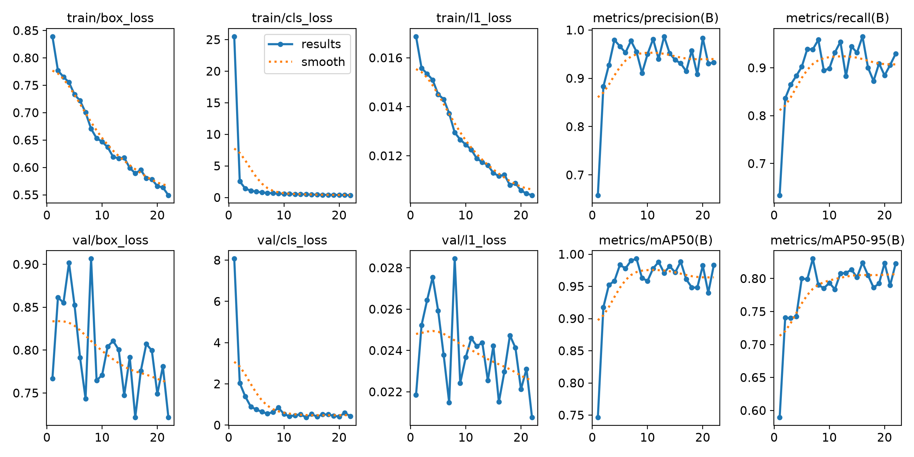
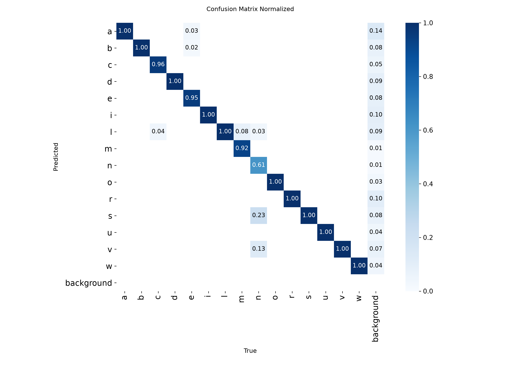
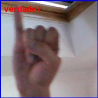
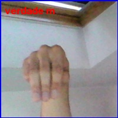
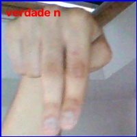
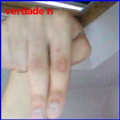

Anny Carolina, RM98295. Henrique Lima, RM551528. Pedro Menezes, RM97432.
Pessoas surdas e quem conversa com elas esbarram, na soletração, em um interlocutor que não conhece o alfabeto manual. Este trabalho desenha na tela a letra da mão, com caixa e confiança, e junta as letras estáveis numa palavra. O escopo é a datilologia estática, não a Libras inteira. As fotos públicas são 4410 imagens de 15 letras cuja forma coincide com a ASL, sob licença GPL-2, separadas em 3083 de treino, 878 de validação e 449 de teste. O YOLO26n treinado no COCO não acertou nenhuma dessas 449 letras. Depois do treino próprio, o YOLO26n chegou a mAP@50 de 0,952 no teste e o YOLO26s a 0,950. A inferência medida no validador foi de 3,3 ms no n e de 7,5 ms no s. No teste público, o n das 40 épocas deixou as 16 fotos de N sem caixa e leu U como V em 8 fotos. Uma amostra curta do celular, mão direita e sem rosto, mudou o acerto no trecho que não entrou no treino: de 61 para 186 quadros, em 196. A sexta rodada, com U e W novos, acertou 686 de 748 quadros, ainda acima dos 60%. A letra só entra na palavra depois de 8 quadros estáveis, com confiança de pelo menos 0,60. Abaixo disso a tela mostra incerto. Esse percentual do celular é da mesma pessoa e do mesmo minuto. G, P, Q, T e as letras de movimento continuam de fora.
O CitizenTech procura ferramentas que uma pessoa usa no dia a dia, sem depender de um especialista ao lado. Na conversa com alguém surdo, a soletração manual resolve nomes, endereços e palavras que não têm sinal próprio. Quem não estudou o alfabeto trava nesse ponto. Uma câmera que devolve a letra, e em seguida a palavra, encurta essa espera. O desenho na tela é uma camada leve de realidade aumentada: a caixa fica sobre a mão e o texto cresce ao lado.
O problema cabe em visão computacional porque a letra estática é uma forma da mão, com uma caixa e uma classe. Não tentamos traduzir a Libras. Frases, expressões do rosto e letras que exigem movimento ficam de fora. As letras de movimento citadas na literatura usada no planejamento são H, J, K, X, Y e Z. O cidadão atendido é a pessoa surda e também quem precisa ler o que ela soletra. Os ODS ligados a esta escolha são o 10, o 4 e o 9.
O grupo filmou só a mão direita, sem rosto, numa parede clara. Não há placa, endereço nem identificação de terceiros nesses clipes. O sistema informa a letra. Não decide nada no lugar da pessoa.
O critério combinado foi simples: no trecho do vídeo do celular que não entra no treino, a letra da caixa mais confiante precisa coincidir com o nome do arquivo em pelo menos 60% dos quadros. Esse número não substitui o teste das fotos públicas. Os dois ficam no relatório porque um peso pode melhorar a mão filmada e piorar as fotos antigas. A amostra é da mesma pessoa, no mesmo minuto, e o texto diz isso.
Detectar letras estáticas do alfabeto manual, com caixa, classe e confiança, e acumular as letras estáveis numa palavra mostrada na tela. O aceite é acertar pelo menos 60% das letras num trecho do vídeo do celular que não tenha entrado no treino, sem síntese de voz.
O detector é o YOLO26, da linha Ultralytics 8.4.214, licença AGPL-3.0. Escolhemos essa família porque entrega caixa e classe no mesmo passo, cabe na RTX 2060 de 6 GB e já tem peso pré-treinado no COCO. Comparamos o n, com 2,51 milhões de parâmetros e 5,9 GFLOPs, e o s, com 9,96 milhões e 22,8 GFLOPs. Os dois foram medidos. A demo ficou no n, que é o mais rápido.
O treino usa imagem de 640 pixels, precisão mista fp16, semente 42, cache na RAM e zero workers, por causa do modo de processo do Windows. A placa é uma GeForce RTX 2060, sm_75. O lote do n foi 16 e o do s foi 8. Os dois usaram cerca de 2,4 GB de VRAM. A métrica principal do teste público é o mAP@50. Também registramos mAP@50-95, precisão e recall. No celular, a métrica do critério de 60% é outra: a fração de quadros em que a classe da caixa mais confiante, com piso 0,25, é a letra do nome do arquivo.
A demo está em OpenCV. Ela desenha a caixa, a letra, a confiança e o FPS. Um soletrador só aceita a letra quando ela domina 8 quadros dentro de uma janela de 12, com confiança de pelo menos 0,60. Espaço, backspace e limpar ficam no teclado. Não há síntese de voz. Os pesos, os dados e as rodadas ficam no disco D:, fora do Git. O código público está em https://github.com/pemenezes/citizentech-visao.
O vocabulário do peso final tem 16 classes, nesta ordem: a, b, c, d, e, i, l, m, n, o, r, s, u, v, w e f. As 15 primeiras vêm das fotos públicas. O f entrou na primeira amostra do celular, e a cabeça do modelo ganhou uma linha nova. As fotos públicas não têm f, então o teste de 449 imagens não pontua essa classe. G não virou classe. Os clipes com esse nome mostram a pose do L, indicador para cima e polegar para o lado.
A caixa dos quadros do celular não sai do detector de letras. Sai de uma máscara de pele, em HSV, contra a parede branca. O detector treinado nas fotos públicas perdia o enquadramento do Pedro, e usar a caixa dele para recortar o próprio treino repetiria esse erro. A letra do quadro é o nome do arquivo. A divisão é contígua no tempo: um trecho estável treina e o fim do clipe testa. Quadros sorteados misturariam a mesma mão nos dois lados.
Durante o ajuste, a validação que escolhe o arquivo best.pt continua sendo a validação pública. O teste do celular fica guardado para a medida do critério. Por isso o best.pt pode não ser o melhor nessa medida. Na segunda rodada os dois pesos ficaram quase empatados, 200 e 199 quadros em 269, e a demo ficou com o best.pt, que também soletra dedo no vídeo de prova.
D:\citizentech\cv e o peso COCO do YOLO26n. O script scripts/check_env.py confirmou a RTX 2060, sm_75, e um kernel na GPU. O ambiente é o Python 3.12 do venv em D:\citizentech\cv\envs\cv, com PyTorch 2.15.0+cu132 e Ultralytics 8.4.214.D:\citizentech\cv\video\pedro. Descartar o começo, em que a mão ainda está aberta. A fração descartada muda por vídeo, depois de olhar o quadro em que a mão fecha a letra. A caixa sai da pele contra a parede branca. O primeiro trecho estável vai para o treino, com no máximo 18 quadros por clipe. O trecho final fica só para o teste. As duas tomadas de C foram separadas: c_1 só treina e c_2 só testa. G e H são copiados e não entram no yaml. Na segunda leva, D, I, V e W entraram. O G refilmado foi recusado de novo.Para repetir: carregar scripts/env.ps1, preparar os dados com scripts/preparar_prova_libras.py e scripts/preparar_pedro.py, e treinar com scripts/treinar_prova_libras.py. Os caminhos estão no README.
No teste público de 449 fotos, o peso de COCO não produziu nenhuma letra com o nome certo. Em 410 fotos houve alguma caixa, quase sempre da classe pessoa. O treino nas letras é o que cria o vocabulário.
| Modelo | Precisão | Recall | mAP@50 | mAP@50-95 |
|---|---|---|---|---|
| COCO, sem treino nas letras | 0 letras certas em 449 fotos | |||
| YOLO26n, 5 épocas | 0,915 | 0,835 | 0,956 | 0,796 |
| YOLO26n, melhor ponto da rodada de 40 | 0,952 | 0,871 | 0,952 | 0,775 |
| YOLO26s, melhor ponto da rodada de 40 | 0,815 | 0,846 | 0,950 | 0,793 |
| YOLO26n, depois da segunda amostra do celular | 0,909 | 0,912 | 0,942 | 0,821 |
A inferência no validador foi de 3,3 ms por foto no n e de 7,5 ms no s. O s recupera a letra N no teste público, com recall 0,80, e marca mais letras erradas. A demo permanece no n. No vídeo de prova, o texto acumulado foi dedo, com cerca de 42 FPS de processamento depois do aquecimento.


No teste público do n, com limiar 0,25, houve 23 fotos sem caixa e 10 com a letra trocada. Sem caixa: N 16, I 4, M 2, U 1. Trocas: U lida como V em 8, U lida como R em 1, V lida como W em 1. As 16 falhas de N são outro enquadramento, com a mão vinda de cima. I e M que sumiram estão no mesmo cômodo do treino. U e V se confundem porque a diferença é a abertura dos dedos.




No celular, antes de misturar a amostra do Pedro, o n das 40 épocas acertou 61 de 196 quadros do teste (31%). Depois do ajuste, o peso da época 9 acertou 186 de 196 (95%). Por letra, nessa rodada: A 8/15, B 16/16, C 34/34, E 15/15, F 12/12, L 15/15, M 12/12, N 7/7, O 40/40, R 10/10, S 8/8, U 9/9, V 0/3. O V daquele clipe quase não tinha quadro estável. O critério de 60% foi atingido. No teste público, esse mesmo peso caiu para mAP@50 0,828, e o recall de S nas fotos antigas foi para 0,06. O ganho no celular e a perda no S público andam juntos.
A segunda rodada refilmou D, I, V e W e repetiu o ajuste por 12 épocas, a partir do peso que tinha acertado 186 de 196. A validação pública escolheu a época 9, com mAP@50-95 0,851. No teste do celular, agora com 269 quadros, esse peso acertou 200 (74%). O peso anterior, medido no mesmo teste, acertou 188 (70%). Por letra: A 8/15, B 16/16, C 34/34, D 0/19, E 15/15, F 12/12, I 8/24, L 15/15, M 12/12, N 7/7, O 15/40, R 10/10, S 8/8, U 9/9, V 17/19, W 14/14. V subiu de 1/19 para 17/19 e W de 1/14 para 14/14. D ficou em zero: 14 quadros lidos como V e 5 como L. O fim desse clipe é o indicador em pé, diferente do trecho que entrou no treino. I acertou 8 de 24; os outros 16 foram lidos como D. O caiu de 40/40 para 15/40, e os 25 erros foram lidos como D. No teste público de 449 fotos, o mesmo peso ficou em precisão 0,909, recall 0,912, mAP@50 0,942 e mAP@50-95 0,821. O S público voltou a recall 1,00. O N ficou em recall 0,515 e o U em 0,333. A inferência no validador foi de 4,0 ms. O G refilmado continua com a pose do L, indicador para cima e polegar para o lado, e ficou de fora. H é letra de movimento e também ficou de fora. P, Q e T não foram filmados.
A terceira rodada refilmou A, E, M e N com o rosto no quadro, do jeito que a demo é usada. A caixa ficou na mão, não no rosto. A1 e E1 só treinam; A2 e E2 só testam. Antes do ajuste, esse teste ampliado, com 429 quadros, dava 252 acertos (59%). Nos clipes novos: A2 11/40, E2 34/40, M 7/40 e N 0/40. Depois de 12 épocas, a validação pública escolheu a época 8. Esse peso acertou 380 de 429 (89%). Nos clipes novos: A2 39/40, E2 40/40, M 33/40 e N 40/40. Os 7 erros de M foram lidos como N. O único erro de A2 foi lido como D. O das fotos antigas voltou a 40/40. D continua em 0/19. No vídeo de prova o texto continuou dedo.
A quarta rodada refilmou o S, uma tomada só com a mão e outra com o rosto. A da parede entrou no treino. O fim da tomada com rosto ficou no teste. Antes do ajuste, esses 40 quadros eram lidos como E, zero acertos. O peso da época 12 acertou 405 de 469 (86%). O S com rosto foi a 40/40 e o E com rosto continuou em 40/40. O A com rosto caiu de 39/40 para 28/40. M ficou em 37/40 e N em 40/40. No vídeo de prova o texto continuou dedo.
A quinta rodada refilmou E, S, O, C e D só com a mão na parede. O começo de cada clipe treinou e o fim ficou no teste. Antes, o E novo era lido como S em 39 de 40, o O como D em 31 de 40 e o C como O em 30 de 39. Depois, o peso da época 12 acertou 602 de 668 (90%). E novo 35/40, S novo 40/40, O novo 40/40, C novo 39/39, D novo 33/40. O S com rosto e o E com rosto continuaram em 40/40. O A com rosto voltou a 36/40. O W caiu para 4/14. No vídeo de prova o texto continuou dedo.
A sexta rodada refilmou U e W só com a mão na parede. O começo de cada clipe treinou e o fim ficou no teste. O ajuste teve 4 épocas, a partir do peso de 602 de 668, e a época foi escolhida pelo teste do celular. A validação pública preferiu a época 1 (mAP@50-95 0,851), que acertou 637 de 748 e deixou o D em 10 de 59. A época 4 (mAP@50-95 0,830) acertou 686 de 748 (92%). Antes, o U novo era 0/40, com 29 sem caixa, e o W novo era 0/40, com 34 lidos como V. Depois: U novo 40/40, W novo 40/40 e o W antigo 13/14. E novo 39/40, S novo 40/40, O novo 40/40, C novo 39/39 e D novo 40/40. O E com rosto continuou em 40/40. O A com rosto caiu de 36/40 para 28/40: 5 sem caixa, 4 lidos como N e 3 como D. O D curto antigo ficou em 0/19, 14 lidos como U e 5 como V. No vídeo de prova o texto continuou dedo.
O detector aprende as 15 letras públicas e, com uma amostra pequena da mesma mão, passa de 31% para 92% no trecho do celular que não viu no treino. A demo soletra na tela, recusa a letra instável e não usa voz. O n é suficiente para o tempo real nesta placa. O s empata no mAP@50, acha melhor a letra N das fotos públicas e custa mais que o dobro do tempo de inferência. Na sexta amostra, o U novo passou de 0 para 40 de 40 e o W novo de 0 para 40 de 40. O A com rosto caiu de 36 para 28 de 40. O critério de 60% continua atendido, com a ressalva de que é a mesma mão.
As limitações são concretas. O teste do celular é a mesma pessoa, no mesmo minuto, com parede clara. Não mede outra mão nem outro dia. O S das fotos públicas piora quando o peso se aproxima do celular. G não entrou porque a pose filmada é a do L. Letras de movimento e P, Q e T continuam fora. Não há rosto nos clipes, e o sistema não guarda quadro de usuário por padrão. O próximo passo, se houver tempo de produto, é ligar o texto soletrado ao assistente Luz Cidadã, ainda com uma pessoa conferindo a palavra antes de qualquer ação.
Bianca Pasqualini. Brazilian Sign Language Alphabet Dataset. Código sob MIT. https://github.com/biankatpas/Brazilian-Sign-Language-Alphabet-Dataset
Akash Nagaraj. ASL Alphabet. Imagens sob GPL-2. https://www.kaggle.com/datasets/grassknoted/asl-alphabet
Mendeley Data, 10.17632/k4gs3bmx5k.5. Mesmo recorte das 15 letras.
Ultralytics YOLO26. AGPL-3.0. https://docs.ultralytics.com
Repositório do grupo: https://github.com/pemenezes/citizentech-visao
O vídeo de entrega ainda não tem link. O roteiro está em docs/roteiro_video.md.